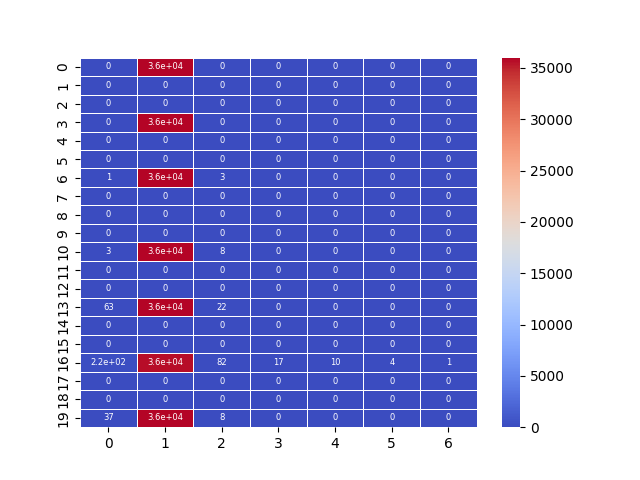

Note
Click here to download the full example code
07.b stats.2dbin and sns.heatmap
This script offers a streamlined approach for visualizing 2D data
density by combining scipy for aggregation and seaborn for
plotting. 📊 It demonstrates a powerful and common data science
pattern for handling large, scattered datasets.
The workflow involves:

Binning Data: It uses
scipy.stats.binned_statistic_2dto group scattered 2D points into a grid and count the number of occurrences in each cell.Seaborn Visualization: The resulting 2D count matrix is then directly plotted using
seaborn.heatmap, providing a quick and effective way to see data concentration.
Out:
C:\Users\kelda\Desktop\repositories\github\python-spare-code\main\examples\matplotlib\plot_main07_b_2dbin_heatmap.py:53: UserWarning:
FigureCanvasAgg is non-interactive, and thus cannot be shown
21 import numpy as np
22 import pandas as pd
23 import seaborn as sns
24 import matplotlib.pyplot as plt
25
26 from pathlib import Path
27 from scipy import stats
28
29 # Load data
30 path = Path('../../datasets/shap/')
31 data = pd.read_csv(path / 'shap.csv')
32
33 # Get x, y and z
34 x = data.timestep
35 y = data.shap_values
36 z = data.feature_values
37
38 # Show
39 data[['timestep', 'shap_values', 'feature_values']]
40
41 # Binned stats
42 statistic, x_edge, y_edge, binnumber = \
43 stats.binned_statistic_2d(x=x, y=y, values=z,
44 statistic='count', bins=[20, x.nunique()],
45 expand_binnumbers=False)
46
47 # Display
48 sns.heatmap(statistic, annot=True, linewidth=.5,
49 cmap='coolwarm', annot_kws={"fontsize":6},
50 square=False)
51
52 # Show
53 plt.show()
Total running time of the script: ( 0 minutes 0.406 seconds)